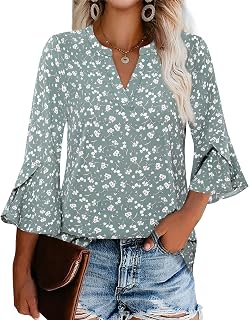
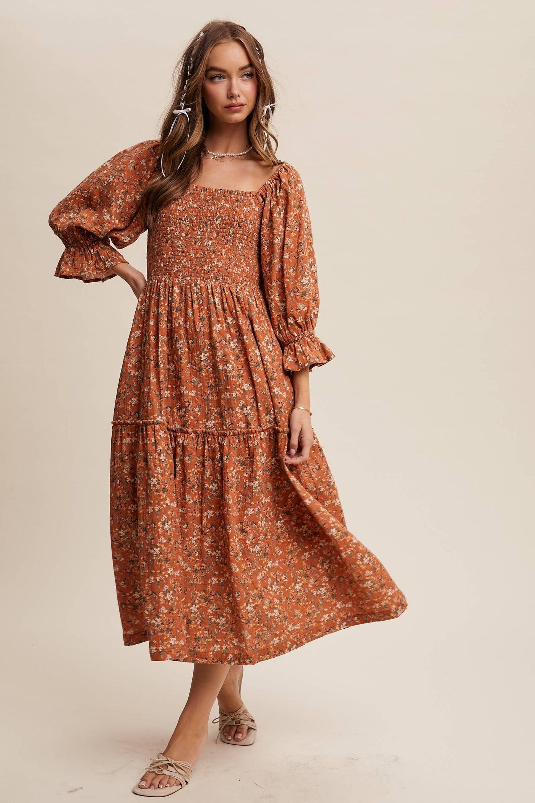

01 克制荷叶边实穿化
把客户偏好的女性化细节收敛到可穿、易搭配的上衣与连衣裙。
电商供给Amazon US 24 件演示样本中 15 件采用局部荷叶边。
社媒信号成熟花卉与舒适衫型有持续内容，互动不等于销量。
客户适配匹配 35-50 岁女性与百货日常场景。
Crown & Ivy / Fall Transition 2026。电商、社媒、品牌站与趋势资料分别核对，不合并平台销量，不把社媒互动直接解释为购买。

把客户偏好的女性化细节收敛到可穿、易搭配的上衣与连衣裙。

保留品牌花卉识别度，用更大比例、低对比底色和局部纹样更新视觉。